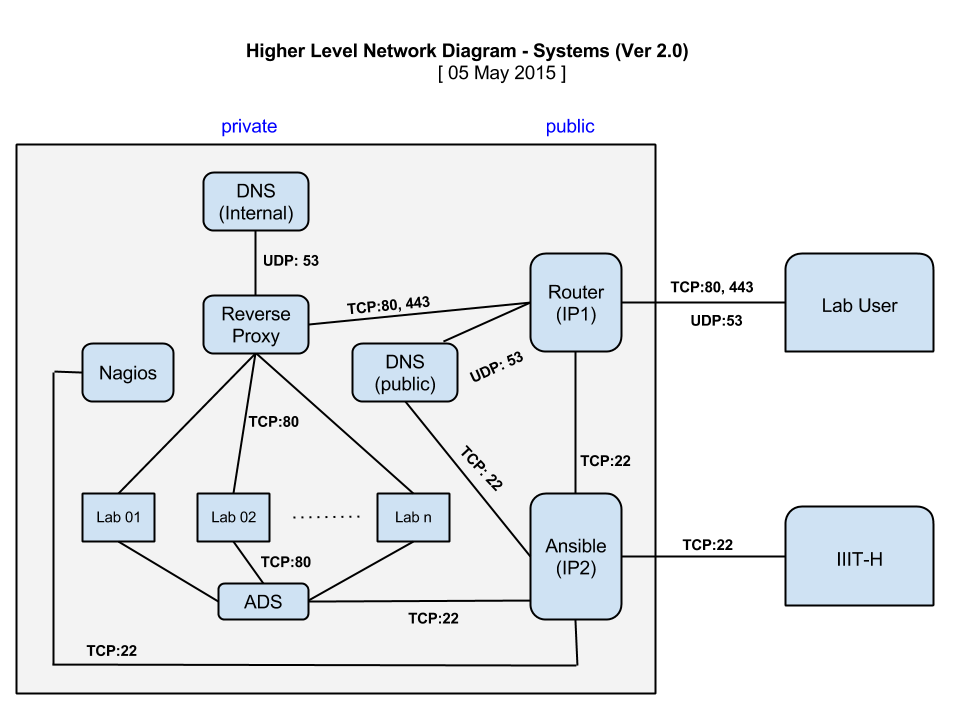

Virtual Labs Cluster Automation
Table of Contents
1 Introduction
This document is for automating the Virtual Labs cluster setup using ansible( Configuration management tool).
2 Problem
The problem is bootstrapping steps for cluster creation. For creating VLEAD cluster( Infrastructure for hosting labs), bootstrapping steps takes three to four days for VLEAD Employees( who knows about VLEAD cluster) and for others it may take two to three weeks.
3 Objective
Automate the boostrapping steps and running systems-model ansible playbooks. So that eliminate more number of days to setup VLEAD cluster and install cluster in minimal steps in one day.
4 Network Diagram

5 Implementation
6 Bootstrapping steps
- Bootstrapping steps These steps are needed to setup cluster using ansible scripts written in implementation section.
7 Important Repositories
The following repositories are used in automation steps which are in github
8 Issues and Milestones
Links for issues raised during execution and weekly milestones
9 Branches in cluster-automation repository
- Master - Production repo
- Develop - Development repo ( similar to Master)
- Features - Adding features